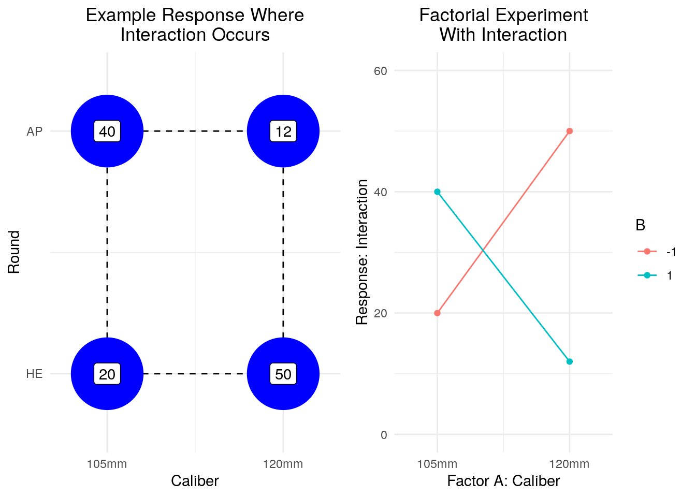

5 Fundamentals of Design of Experiments
5.1 Introduction
All experiments are designed experiments. The important issue is whether they are well designed or not.
Douglas C. Montgomery Montgomery (2017)
This chapter introduces the fundamentals of Design of Experiments (DOE). An experiment, as we shall discuss, is simply the configuration of one or more tests that we conduct with the intention to learn something. Tests are discrete events where we supply inputs and measure outputs in some manner. These tests take many forms, including the physical (e.g., mixing some quantities of chemicals and measuring the properties of the resulting solution) and the virtual (e.g., providing some inputs to a computer simulation and recording the outputs). As noted by Montgomery in the quote above, any time we conduct an experiment13 we, by definition, have designed it. The quality of the experiment is whether it 1) can answer our question(s) and 2) do so in an economical manner. The statistical design of experiments helps us with both.
5.1.1 Admin
- POC: For any comments or identified errors, please contact Steve Gillespie at stephen.e.gillespie.mil@mail.mil or Emma Schlagenhauff at emma.schlagenhauff.civ@mail.mil.
- This section was rendered using R version 3.6.0 (2019-04-26) on 24 May 2021.
- The chapter is organized into sections that each include a description, a tutorial, and a problem set.
5.2 DOE Overview
5.2.1 What is Design of Experiments?
The (statistical) design of experiments is the choice of tests for an experiment such that the resulting data may be analyzed using statistical methods in a valid, objective way. A well designed experiment can:
- Help researchers distinguish between causation and correlation.
- Help researchers ensure they have covered an appropriate area of the “experimental space.”
- Help researchers minimize the number of tests they need to run.
- Help researchers model the nature of the relationship between their inputs and their outputs.
To discuss DOE, we must introduce a few terms:
- Experiment: An experiment is a set of tests that are intended to answer some question about the relationship between inputs (i.e., factors) and outputs (i.e., responses).
- Test: A test is an activity that one conducts to measure a response for some set of inputs. This may be physical (e.g., a chemical experiment), or in our case, a simulation. A test can be done with multiple replicates.
- Factor: An input variable that may take two or more values (i.e., levels).
- Level: The value a factor takes.
- Treatment Combination: This is the set of inputs (i.e., factors) and their values (i.e., levels) that a test takes.
- (Experimental or Design) Space: A theoretical space that is the set of all possible treatment combinations. This may be considered either within only the scope of the studied factors or the set of all theoretical factors. Read more about design and trade spaces here (TBP).
- Controllable or Uncontrollable: Factors may be controllable if their level may be varied at will by the experimenter. They are uncontrollable if they cannot be varied at will by the experimenter.
- Nuisance Factor: A factor that has an impact on the outcome of a test, but is not something the experimenter is directly concerned with.
This short video provides a nice overview on DOE.14
JMP15 has two older videos of J. Stuart Hunter16 introducing design of experiments: Part I , Part II . They are about 30 minutes total, but well worth watching.17
5.2.2 Why Design Experiments?
When discussing DOE, a natural question arises: why? There are at least three answers to this question:
Analysis: Data and information do not equal knowledge. While all experiments will produce data, the question of whether or not that data can be transformed into knowledge is not a given. As one of the most common and powerful techniques for turning data into knowledge is statistics, data that has been acquired and structured such that it can be used by statistical tests and models is of much greater value than data that has not been.
Breadth: Good experimental design helps one from inadvertently missing a significant portion of the experimental space and finding local extremes.
Economy: Experiments are, among other things, expensive. They cost resources, time, and money. All other things being equal, the experiment that uses less, is done faster, and costs less but delivers the same, or a very close approximation to the same knowledge is better than a more resource-intensive, time consuming, and expensive one.
Fun: Finally, designing experiments is fun! I’m not sure I can think of a better reason than that!
Finally, one may say all of the above is well and good, but I’m doing computer simulation and computer simulations are fast and cheap. I should simply design an experiment to test all possibilities. Consider the following situation:
Imagine you are an analyst designing a system that has 100 parameters, e.g., the length of the system, or the system’s maximum range, etc. Further imagine that for each one of these parameters you have only two values, a high and a low. The set of all possibilities is therefore: \(2^{100} \approx 1.3 \times 10^{30}\).
\(10^{30}\) is a fantastically large number. Consider the age of the universe in seconds by comparison. The universe is approximately: 13.8 Billion years old.
\[13.8 \times 10^{9} years * 365 \frac{days}{year} * 24 \frac{hours}{day} * 60 \frac{minutes}{hour} * 60 \frac{seconds}{minute} \approx 4.4 \times 10^{17} seconds\]
Even if your computer simulation could run in a single second, you would still need \(\approx 2.9^{12}\) simultaneous processes running to calculate all the possibilities for this system of the course of the universe’s lifespan. This of course assumes you have room for all of that data!
While this is an obviously extreme example to make a point, situations like this can easily exist, and we need strategies to deal with them appropriately. DOE provides us with a way.
5.2.3 Strategies for Experimental Design
There are a number of strategies an analyst may take in designing experiments. Some have more merit than others.
- Subject Matter Experts: One may rely on subject matter experts (SMEs) to choose the appropriate tests for an experiment. While one should always employ non-statistical knowledge in designing an experiment (this is a foremost principle), solely using SME judgment is generally a flawed approach. First, it assumes that one has the most appropriate expert for the study.18. Of course, this is never quite true as one is generally conducting experiments to gain new knowledge and an SME has expertise in existing knowledge. Second, it assumes that the selected SME is without bias or other limitations.19.
- One Factor at a Time: Another approach is to vary one factor at a time (OFAT). This is a more systematic approach than SME judgment, but it has several flaws. The most notable flaw is that it ignores the potential for interaction effects between two or more factors. Second, its success depends heavily on the initial fixed levels of the non-varying factors. J. Stuart Hunter covered the challenges well in his video (note this is the same as the video linked above, but starting at his discussion of OFAT). Of course, in good experimental design, we do need to vary the levels, so we will carry this forward.
- Random Design: Another strategy for experimentation may be to randomly choose the treatment combinations. This of course has the advantage that it reduces the potential for bias and allows for interactions. It has the problem, however, that it can introduce colinearity and does not guarantee an appropriate coverage of the experimental space. Of course, randomization is necessary for many statistical tests, so we will carry this forward.
- Statistical DOE Finally, we can look at statisitcal DOE as a strategy. In this strategy, we begin with the end in mind. That is, we design the experiment such that the results can be subject to appropriate analysis and maximize objectivity.
5.2.4 History and Applications of Experimental Design
Statistical experimental design traces its roots to Sir Ronald Fisher in the first half of the 20th century. This work focused primarily on applications to agriculture. It has subsequently been expanded on and developed by a many statisticians including George E.P. Box20 among others .
Applications of DOE include:21
- Agriculture.
- Biology.
- Medicine.
- Psychology.
- Manufacturing.
- Quality control.
- Requirements and capability engineering.
5.2.5 Principles
Montgomery Montgomery (2017) (§ 1.3) offers three principles for experimental design: randomization, replication, and blocking. We will treat each in turn:
Randomization: Randomization is generally necessary to avoid the introduction of dependency among the data. This is most often considered within the context of test order. For example, consider an experiment where the test is boiling temperature of various solutions. Boiling temperature is affected by the air pressure, and air pressure can vary even at a static location according to the weather. If one were conducting tests while the weather system changed, the tests would be affected. Randomizing helps us mitigate that variation when we cannot otherwise control for it. In the context of computer simulations we are in a fortunate situation in that we control this type of noise and so things like run order are not generally consequential for simulations.
Replication: We typically need to replicate our tests, that is conduct the same test multiple times, so that we can get an estimate of the variability that occurs for a single level of the test such that we can estimate if differences observed are a function of a true distinction between two or more levels or simply a function of experimental error (note this is the same concept as discussed in the ANOVA chapter).
Blocking: Finally, we can block to account for controllable, but undesired factors. That is, we can set groups of tests into relatively similar experimental conditions, so that we can focus on the effects of the factors we care about. Similar to the consideration of randomization, blocking is relatively easy for computer simulation. That stated, we may want to block in a computer simulation for factors that may arise in reality. For example, if we are designing a system, we may want to block on the scenario in which we place the system, as we can never fully know what scenario it may be used in.
5.2.6 Guidelines
This course was purposefully titled, “The Design and Analysis of Experiments for Simulation” as we consider both the design of the experiment and the subsequent analysis equally important. We will attempt to follow a set of guidelines in designing experiments. These follow Montgomery’s Montgomery (2017) (§1.4) guidelines, though they are similar to many other problem defining / solving techniques, for example the Army’s TRAC’s Measurement Space methodology closely aligns to the first three steps of the guidelines. We will only cover a brief review of these guidelines, but recommend analysts read the full treatment in Montgomery (2017).
There are seven guidelines for designing an experiment:
- Recognition and statement of the problem.
- Selection of the response variable.
- Choice of factors, levels, and ranges.
- Choice of experimental design.
- Performing the experiment.
- Statistical analysis of the data.
- Conclusions and recommendations.
Steps 1-3: The first three steps can variously be called measurement space analysis, problem definition and scoping, or simply good critical thinking. In any event, they require a combination of subject matter expertise in 1) the nature and domain of the problem itself, 2) the nature and domain of the experiment. The actual statistical knowledge required for these steps is relatively minimal; however, it can help one categorize variables and the nature of what is possible within experimental design. In particular, one must consider design factors, held constant factors, nuissance factors (both controllable and uncontrollable), and response variables. Statistical knowledge also helps in determining the purpose of the study, whether it is to screen factors for effects or to help build detailed models for optimization. While these steps are vitally important, conducting them is situation, domain, and organization dependent. We will not cover them in great detail in this course.
Step 4: The world of experimental designs is not homogeneous. The choice of design is dependent on the nature of the varying factors (e.g., quantitative vs. qualitative), the desired response model, and the resources available to conduct the experiment. Similar to knowing a wide variety of hypothesis tests, understanding the set of possible designs and their various attributes is important such that analysts may choose the most appropriate design for their problem.
Step 5: Actually performing the experiment is highly important. One must ensure it is conducted correctly and that the measured responses are both appropriate and measured correctly. Of course, performing the tests is highly domain dependent; accordingly, we will not cover how to build simulations in this course or conduct other tests. That stated, recall that it is important to validate that the tests were conducted correctly and that the data is accurate before moving on to subsequent steps.
Steps 6-7: Finally, one must actually analyze the data, interpret the results, and provide recommendations. This analysis and its associated interpretation and recommendations are covered in later sections of this course. One important note, however, is that experimentation and the development of knowledge is iterative. The results of one experiment generally can and should inform future experiments.
Finally, recall the purpose of any study is generally to develop knowledge and inform a decision. As such, remember, do not let the math cloud your judgment. By that, we mean: ensure you bring your or your team’s non-statistical knowledge of the problem to bear; distinguish between statistical and practical significance; opt for a simplest design and analysis that sufficiently answers the question; recall that you are almost assuredly going to have to 1) explain your results to a non-statistician (or even non-quantitative person) and 2) defend your results as reasonable.
5.2.7 Problem Set
There is no formal problem set for this section. That stated, think of a problem on which you have worked on or may work on and consider how the problem can be related to experimental design. Be prepared to discuss this in a group setting.
5.3 Factorial Designs
5.3.1 Introduction
Factorial designs are some of the most common experimental designs out there and highly useful. In a sense we have already seen these with our discussions on ANOVA, so if this feels familiar that’s a good thing. The basic idea of a factorial design is as follows:
A researcher has identified two or more factors that can each take two or more levels (where the definition of factor and level are the same as in ANOVA). These factors and levels can be of any variety, quantitative, ordinal, qualitative, etc. We then take the Cartesian product of the sets of levels to produce all possible “treatment combinations.” A treatment combination is simply the set of levels for each factor for a given test. The cardinality of the set of treatment combinations for a factorial experiment is then simply the product of the cardinality of the set of levels for each factor.22
We can see this more concretely with an example. Consider a researcher who is designing a tank main gun and is considering two factors: the caliber, which may be set to either 105mm or 120m and the type of round used, which may be set to High Explosive (HE) or Armor Piercing (AP). In this case, we have:
- Two factors: Caliber (A) and Round (B).
- Each factor has two levels:
- A: 105mm or 120mm.
- B: HE or AP.
- We have four treatment combinations:
- 105mm and HE ((1)).
- 120mm and HE (a).
- 105m and AP (b).
- 120mm and HE (ab).
- Note that by convention we typically indicate factors with capital letters and treatment combinations with lower case letters (more to follow on exactly how we do this).
Often times, it is helpful to see this geometrically:

This, of course, should familiar from the discussion of two factor ANOVA. Moreover we can generalize these concepts to any number of factors with any number of levels; however for the next several sections, we will limit our discussion to experiments where there are only two levels per factor, and, in the next section, to experiments with only two factors.
There are a few other concepts to recall (from our ANOVA discussion) before we move forward:
- Effect: A change in the response (i.e., your output) based on a change in the level of a factor.
- Main Effect: This is the change in the response based on changing a single factor.
- Interaction Effect: This is the change in the response based on changing two or more factors.
- Interaction: An interaction occurs when “the effect of one factor on the response depends on the levels of the others”. That is, the combined effects of two factors are not additive Law (2015).
- Recall we can see this interaction effect visually. Consider the following plots that use the same scenario as above. Assume we have measured some response as indicated by the numbers in the geometric view:
Examle Without Interaction:

Example With Interaction

As we have seen before, interaction is generally indicated through a change in the slope of the trace lines (i.e., the lines intersect). More concretely, we see this interaction being “non-additive” in the following sense:
- In the first example, we have two factors: Caliber and Round Type.
- When we increase the caliber from 105mm to 120mm (and hold round constant) we have an effect of ~20, going from 20 to 40.
- When we change the round from HE to AP (and hold caliber constant) we have an effect of ~10, going from 20 to 30.
- When we change both the caliber and round, we have an effect of 32, going from 20 to 52.
- We see very little interaction because we can explain the change in response of 32 by the change of each factor independently as 32 ~ 10 + 20.
- We might say there is an interaction effect of 2 to explain the difference, but in reality, that is so small and subject to experimental error that we generally do not consider such small effects (we’ll make this more precise later).
- In the second example, we have the same two factors:
- When we increase the caliber from 105mm to 120mm (and hold round constant) we have an effect of ~30, going from 20 to 50.
- When we change the round from HE to AP (and hold caliber constant) we have an effect of ~20, going from 20 to 40.
- When we change both the caliber and round, we have an effect of ~-8 going from 20 to 12.
- We cannot explain this change based solely on the effects of each individual factor, as we would assume, if there were no interaction effect between the round and caliber, we would assume a 120mm with AP would be our base level + the effect of caliber + the effect of round or 20 + 30 + 20 = 70.
- Instead we see a large distinction between what we would expect and what we observed and that is the interaction effect of round and caliber at the levels 120mm and AP, of 70 - 12 = 58. We apparently have a large interaction effect.
- We cannot explain this change based solely on the effects of each individual factor, as we would assume, if there were no interaction effect between the round and caliber, we would assume a 120mm with AP would be our base level + the effect of caliber + the effect of round or 20 + 30 + 20 = 70.
- Finally, note all the above numbers are indicated to get an intuitive understanding of interaction effects, we’ll make estimating effects more precise in a future section.
Coding Variables: There is a new concept to consider: coding variables.
We often find ourselves in situations where the levels of a factor can either not be described quantitatively or it is inconvenient to do so. In these cases, we often provide levels a coded, quantitative scale. Very commonly, we have experiments where we have a “low” and “high” level for each factor and we can code the levels as either: * Low = -1 and High = 1. * Low = 0 and High = 1.
This coding allows us to model non-quantitative levels and often makes the math easier for levels with quantitative, but unruly23 levels.
We will discuss in future sections how we use this coding to model effects and understand different aspects of our designs.
Advantages of Factorial Designs: Finally, it is important to consider why factorial designs are advantageous. There are at least two reasons:
- Breadth: A factorial experiment ensures that you test every combination. This ensures that you do not miss out on interaction effects as you may in an OFAT type strategy.
- Efficiency: While it might sound odd given that factorial experiments test every treatment combination exhaustively, one can gain some efficiency compared to other possible designs, e.g. an OFAT type design. This occurs from the need for replication:
- Recall that to test the mean effect of a factor and account for experimental error, one must do at least two replicates for each level.
- What is useful in a factorial experiment is that one does not necessarily have to test each treatment combination with multiple replicates, as one gets multiple data points for each level of a given factor across all the treatment combinations of which it is a member. For example, in the above scenario, one tests the effect of having a 120mm caliber main gun in both the ‘a’ and the ‘ab’ treatment combination.
- There are further in depth arguments on this, but we will stop at this point. For further reading, see, e.g. Montgomery (2017) §5.2.
- Recall that to test the mean effect of a factor and account for experimental error, one must do at least two replicates for each level.
5.3.2 Assessing and Estimating Effects
If much of the discussion has looked familiar, it should, as in our ANOVA section, we covered analyzing the output of factorial designs (even though we didn’t explicitly say that). Recall, for example, our two factor, fixed effects ANOVA effects model:
\[y_{ijk} = \mu + \tau_i + \beta_j + (\tau\beta)_{ij} + \epsilon_{ijk}\]
Where:
- \(y_{ijk}\) is the response for the \(k^{th}\) replicate of the \(i^{th}\) level of Factor A and \(j^{th}\) level of Factor B.
- \(\mu\) is the overall mean.
- \(\tau_i\) is the effect of Factor A at the \(i^{th}\) level.
- \(\beta_j\) is the effect of Factor B at the \(j^{th}\) level.
- \((\tau\beta)_{ij}\) is the interaction effect of Factors A and B at their respective levels.
- \(\epsilon_{ijk}\) is the error associated with that response.
Further recall that the sum of the treatments effects is 0 for all factors or interactions.
We can then conduct an ANOVA and multiple comparisons test (e.g., Tukey HSD) as conducted in the ANOVA section of this course. We may further extimate these effects using the following equations:
- \(\hat{\mu} = \bar{y_{...}}\), i.e., the estimate for the mean effect is the mean of all observations.
- \(\hat{\tau_i} = \bar{y_{i..}} - \bar{y_{...}}\), i.e., the estimate for the effect of the \(i^{th}\) level of Factor A is the mean for all observations at that level less the mean of all observations.
- \(\hat{\beta_j} = \bar{y_{.j.}} - \bar{y_{...}}\), i.e., the same as above but for Factor B.
- \(\hat{(\tau\beta)_{ij}} = \bar{y_{ij.}} - \bar{y_{i..}} - \bar{y_{.j.}} + \bar{y_{...}}\), i.e., the estimate for the interaction effect at the \(ij^{th}\) level is the mean at that level less the means at only the \(i^{th}\) and \(j^{th}\) levels respectively plus the grand mean.
- These derivations are shown in Montgomery (2017).
Note that the \(\hat{}\) symbol indicates an estimated parameter, the \(\bar{}\) indicates the mean of a set and \(y_{...}\) indicates the observed value at the indicated levels where the first dot is for Factor A, the second for Factor B, and the third for the replicate. If there is a dot, it indicates across all levels of the factor or replicates. For example, \(\bar{y_{...}}\) is the mean of all observations and \(\bar{y_{1..}}\) is the mean for all observations where Factor A is on the first level.
We can do this more concretely with an example:
# We will use the weapon range data set from a previous two factor ANOVA homework
# Recall there were two factors:
# Factor A was Weapon which could be 1, 2, or 3
# Factor B was range which could be 50, 150, or 200m
# The response was number of targets engaged
# There were 6 replciates for each combination
weapon_range <- read.csv('../html/_Chapter3_1_ProblemSets/weapon_range.csv')
weapon_range$Range <- as.factor(weapon_range$Range)
weapon_range$Weapon <- as.factor(weapon_range$Weapon)
# In the previous homework, we had found that weapon, range, and their interaction were significant.
# We can now estimate their parameters
# this gives us our y_{...}
grand.mean <- mean(weapon_range$Targets)
# We can calculate our means by subsetting the data frame to the levels we desire and following
# the above equations
tau.1 <- mean(weapon_range$Targets[weapon_range$Weapon == '1']) - grand.mean
tau.2 <- mean(weapon_range$Targets[weapon_range$Weapon == '2']) - grand.mean
tau.3 <- mean(weapon_range$Targets[weapon_range$Weapon == '3']) - grand.mean
beta.50 <- mean(weapon_range$Targets[weapon_range$Range == '50']) - grand.mean
beta.150 <- mean(weapon_range$Targets[weapon_range$Range == '150']) - grand.mean
beta.200 <- mean(weapon_range$Targets[weapon_range$Range == '200']) - grand.mean
# There are 9 interaction levels, these are left as an exercise to the reader to calculateWe then see:
- \(\mu \approx 31.9\)
- \(\tau_1 \approx = -2.8\)
- \(\tau_2 \approx = 3.2\)
- \(\tau_3 \approx = -0.3\)
- \(\beta_{50} \approx = -1.4\)
- \(\beta_{150} \approx = 3.6\)
- \(\beta_{200} \approx = -2.2\)
This of course, can extend to any number of factors, both in terms of the ANOVA and the estimation of effects.
We can also (and perhaps more commonly) model effects using regression, though we will reserve that discussion for our regression modeling chapter. This is generally called modeling a “response surface.” This is particularly useful when the levels are quantitative.
5.3.3 Blocking
We are now going to introduce the concept of a block. Recall that a factor is a variable input to one’s experiment, e.g., the choice of caliber or round in the example of the experiment for a main tank gun. These are factors of interest for us as experimenters. In some cases, there are what we call nuissance factors. These are factors that affect the outcome of a test, but are not of interest to us. Nuissance factors can be either uncontrollable or controllable.
Uncontrollable factors generally occur in physical experiments and are simply the vagaries of life - e.g. the exact amount of wind present or the exact level of humidity, etc. These are often very hard to control precisely. We attempt to avoid issues associated with this by randomly choosing the order for our experiments. We have encountered this in our ANOVA examples. Recall, for example, the single factor, fixed effects ANOVA problem where we considered the effect of soldier’s load on ruck march times. We randomized their starting order to account for the uncontrollable factors that may occur on a ruck march such as wind, temperature, etc.
Controllable factors also occur in physical experiments, but are ones where we can choose the level of the nuissance factor. For example, if we had been testing soldier ruck march times over several days, we could have blocked by the day that a soldier conducted the experiment.
When we block, we assign replicates to a specific level of the controllable nuissance factor. For example, assume we were doing a physical test of shooting a new tank main gun at a physical target and we had two factors: caliber at either 105mm or 120mm and round at HE or AP. Further assume we had 3 rounds each type of material and we were testing the penetration by shooting at steel plates and had three steel plates that we could shoot at. We could cut each plate into 4 parts, randomly assign one of those parts to each of the treatment combinations, then shoot it and measure our result. We would then be blocking by metal sheet.
Generally when we block, we make an assumption that there is no interaction between the levels of the block and the factors of interest24 We then do our analysis in a similar manner to everything we have done before, simply treating the block as a separate factor in our ANOVA and estimation fo the effects.
Fortunately for simulation:25 we can largely control everything. This is a great advantage of simulation when it comes to experimental design: many of the issues such as run order and blocking become moot. It is imporant to consider blocking and nuissance factors (e.g., scenarios), but the subsequent analysis ultimately becomes the same.
5.4 \(2^K\) Factorial Design
5.4.1 Introduction
Very often, we find ourselves working with a particular class of factorial designs we call \(2^K\) Factorial designs. These are designs where we have \(K\) factors, and each factor has two levels, typically called the low and the high level. As there are only two levels for each of the \(K\) factors, there are \(2\times 2 \times 2 \times ... \times 2 = 2^K\) treatment combinations in this design.
Factors and Levels: In a \(2^K\) design, we generally assume that the levels of each factor are fixed. Moreoever, we generally code the values as either \(\langle 0, 1 \rangle\) or \(\langle -1, +1 \rangle\). This allows us to consider both purely quantitative measures (e.g., weapon caliber), qualitative measures (e.g., camoglauge color), or even groups of changes (e.g. scenario or entire units).
Assumptions: We both assume and design the experiment such that the tests are independent and randomized (up to any blocking we choose) and that we meet the usual normality assumptions (as we have required for ANOVA). We further assume that the response to a factor is approximately linear (if it exists), as when we do our analysis, we can only interpolate in a linear manner between two points.
Applications: Often \(2^K\) designs are used in screening experiments. A screening experiment is an experiment in which one is attempting to simply understand which factors or combination of factors have an effect on the response in any fashion. Often times, experimenters do not know this a priori and simply being able to identify an effect without over-concern on the precision of its estimate allows one to select the most significant factors and then use a more fine-grained approach (i.e., a different design) to understanding the experimental space.26
Limitations: Beyond any limitations associated with the assumptions, the major limitation to a \(2^K\) design is that it is resource intensive and the requisite numbers of tests scales exponentially by \(K\). This means the number of factors you can consider scales logarithmically as a function of your maximum number of tests, i.e., if your maximum number of tests is \(N\), your maximum number of factors is of order \(log_2(N)\).
5.4.2 Coding Variables and Effects Signs
As discussed in the section on general factorial designs, we often find it convenient to code variables to help us 1) understand something about the design itself, 2) represent categorical levels, and 3) “normalize” the values associated with the effects so that we can understand relative effects size. For the time being, we will represent our \(2^K\) designs using orthogonal coding which is representing the low level as -1 and the high level as 1. First, consider how we can represent our \(2^K\) design with this coding:
Consider a \(2^2\) design. First, we build a table where the factors are listed as the columns. We then list the treatment combinations as the rows. The level for each factor is then shown as a +/- as we can see here:
| TC | A | B |
|---|---|---|
| (1) | -1 | -1 |
| a | 1 | -1 |
| b | -1 | 1 |
| ab | 1 | 1 |
This should look familiar from the previous section. Note that we adopt two conventions. The first is that we permute the levels of the factors in increasing order.27 That is, for our first factor, we vary the level every single time; i.e., the levels of A go -1, 1, -1, 1. For our second level, we vary the level every second time, i.e., the levels of B go -1, -1, 1, 1. If we had a third factor, we would vary the levels every 4th time, and so forth. The second convention is that we name the treatment combinations by the “product” of the lower case letter associated with the Factor in that treatment combination that is at the high level. That is, if we have A = -1 and B = 1, we name that treatment combination b. There is nothing sacrosanct about these conventions, but it is typical. The most important thing, of course, is to ensure that we capture every treatment combination correctly.
The next thing we often see is an additional column for the interaction effects. In our above example, this would mean we include the AB interaction as follows:
| TC | A | B | AB |
|---|---|---|---|
| (1) | -1 | -1 | 1 |
| a | 1 | -1 | -1 |
| b | -1 | 1 | -1 |
| ab | 1 | 1 | 1 |
You’ll note two things here. First, this does not add any additional treatment combinations, it merely adds a column for the interaction effect. Second, the value for the interaction effect is the product of the values for the factors that are interacting. For example: for treatment combination \((1)\), \(A = -1\) and \(B = -1\), so \(AB = -1*-1 = 1\). Similarly, for treatment combination \(a\), \(A = 1\) and \(B = -1\), so \(AB = 1*-1 = -1\). This helps us later in understanding ideas about orthoginality and contrast.
We can expand this concept to arbitrarily large \(K\). For example, consider \(K = 3\):
| TC | A | B | AB | C | AC | BC | ABC |
|---|---|---|---|---|---|---|---|
| (1) | -1 | -1 | 1 | -1 | 1 | 1 | -1 |
| a | 1 | -1 | -1 | -1 | -1 | 1 | 1 |
| b | -1 | 1 | -1 | -1 | 1 | -1 | 1 |
| ab | 1 | 1 | 1 | -1 | -1 | -1 | -1 |
| c | -1 | -1 | 1 | 1 | -1 | -1 | 1 |
| ac | 1 | -1 | -1 | 1 | 1 | -1 | -1 |
| bc | -1 | 1 | -1 | 1 | -1 | 1 | -1 |
| abc | 1 | 1 | 1 | 1 | 1 | 1 | 1 |
A note on orthogonality: an astute observer may notice something about the columns in these matrices. That is, the columns are orthogonal . Orthoginality is a general mathematical and physical concept that, in elementary geometry, orthoginality can be equated to perpendicularity. More generally, if we have two vectors of the same length, we say they are orthogonial if their dot product is 0. For example, in the above table, we see column ‘A’ as: $ A = -1, 1, -1, 1, -1, 1, -1, 1 $ and column ‘B’ as \(B = \langle -1, -1, 1, 1, -1, -1, 1, 1 \rangle\). Their dot product can be calculated either manually or in R:
# Define our two vectors
A <- c(-1, 1, -1, 1, -1, 1, -1, 1)
B <- c(-1, -1, 1, 1, -1, -1, 1, 1)
# You can get the dot product in R in any number of ways. Here are two:
# You can sum the product of each vector multiplied element by element.
sum(A*B)## [1] 0## [,1]
## [1,] 0# There are various packages that have a built in dot product function.
# Of course, you can always define your own!Orthoginality is important in experimental design 28 as it tells us something about the independence of the effects we are measuring. That is, if two factors or interaction of factors are orthogonal, we can estimate their effects independently. If they are not, we cannot estimate their effects as such. In a \(2^K\) design, all of our factors and their interactions are orthogonal, so, if we have sufficient tests, we can estimate the effects independently.
Finally, note that these tables have several interesting properties:
- The sum of any factor column is zero (e.g., in the above table, \(A = \langle -1, 1, -1, 1, -1, 1, -1, 1 \rangle\). One can easily verify that the sum of this column is 0.)
- The element-by-element product of any two columns results in another column in the table. Specifically, it yields the column that is the product of the two factors where the exponent of each factor is assessed modulo 2. This is best seen with an example.
- Consider \(A \times AB\). One “multiplies” the two names to get: \(A^2B^1\). We then take the exponent of A modulo 2 and see \(2 mod 2 = 0\) and the exponent of B modulo 2 and see \(1 mod 2 = 1\), so we have: \(A^2B^1 = A^0B^1 = 1 \cdot B = B\).
- We can confirm this: \(A = \langle -1, 1, -1, 1, -1, 1, -1, 1 \rangle\), \(AB = \langle 1, -1, -1, 1, 1, -1, -1, 1 \rangle\) and the pairwise product of these two is: \(\langle -1*1, 1*-1, -1*-1, 1*1, -1*1, 1*-1, -1*-1, 1*1 \rangle = \langle -1, -1, 1, 1, -1, -1, 1, 1 \rangle = B\).
- We will sometimes include an identity column, \(I = \langle 1, 1, ... 1 \rangle\) (i.e., all positives) that is not a factor, but allows for consistent multiplication.
5.4.3 Estimating Effects and Contrasts
The point of an experimental design, of course, is to identify the effects of a factor some interaction. We introduced a means to estimate effects in the general factorial design for two factors at any number of levels, we can generalize that here for \(K\) factors at two levels. We will do this through the idea of contrasts. Let us consider an example:
Recall our tank main gun example from the previous section. We had Factor A as the round type, either HE or AP and Factor B as the caliber, either 105mm or 120mm. This is a \(2^2\) design. Let HE and 105mm be the low levels and AP and 120mm be the high levels. We can visualize it as follows:

Further assume we have been able conduct the experiment and run each test 3 times (i.e., \(n = 3\) replicates) and we had the following results:
We can visualize these results geometrically:

We will take the convention here that (for a balanced design, i.e., we have the same number of replicates per treatment combination), the value of a treatment combination is the sum of the response of the treatment combination as assessed in each replicate. That is, for example, (1) = 59 because we assessed the response of (1) as 20, 18, and 21. We then say that the effect of a factor is the difference between the average response when the factor is at its high level and the average response when the factor is at its low level. This becomes very apparent in our notation, as we can say, for example the effect of is: \(A = \frac{ab + a}{2n} - \frac{b + (1)}{2n} = \frac{1}{2n}[ab + a - b - (1)]\) where \(n\) is the number of replicates and the values of \((1), a, b, and ab\) are as indicated above.
In our example, we can then say that \(A = \frac{1}{2\cdot3} [153 + 119 - 89 - 59] \approx 20.7\). Similarly, we can say that \(B = \frac{1}{2\cdot3} [153 + 89 - 119 - 59] \approx 10.7\) and $ [153 + 59 - 119 - 89] 0.7$.
You may notice two things about these equations:
- The form (for a \(2&K\) design) of these factor effects is \(\frac{1}{2^{K-1} \cdot n} \times [Something]\)
- That \([Something]\) has a generally common form. Two things on this:
- This is called the contrast for a given factor.
- The value of the contrast is: \(\bf{tc} \cdot \bf{factor}\). Where, \(\bf{tc}\) is the vector of values for the treatment combinations, e.g. \(\bf{tc} = \langle (1), a, b, ab \rangle = \langle 59, 119, 89, 153 \rangle\) (in the above example) and \(\bf{factor}\) is the vector of +/-1 associated with that factor’s treatment combinations, e.g., \(A = \langle -1, 1 -1, 1 \rangle\) in the above example. We generally call this \(Contrast_{Factor}\), e.g. \(Contrast_A = -1 \cdot 59 + 1 \cdot 119 + -1 \cdot 89 + 1 \cdot 153 = 124\).
Given this set up, it’s relatively easy to calculate contrasts using a data frame, for example:
# Define our data frame
myDF <- myDF <- data.frame(A = (c(-1, -1, 1, 1)), B = c(-1, 1, -1, 1), tc = c('(1)', 'b', 'a', 'ab'), run.1 = c(20, 30, 40, 52), run.2 = c(18, 31, 37, 53), run.3 = c(21, 28, 42, 48))
# Modify the data to add the AB column and sum the runs; drop unnecessary additional info and order the data
myDF <- myDF %>% mutate(Run.Total = run.1 + run.2 + run.3, AB = A*B) %>% select(tc, A, B, AB, Run.Total)
myDF## tc A B AB Run.Total
## 1 (1) -1 -1 1 59
## 2 b -1 1 -1 89
## 3 a 1 -1 -1 119
## 4 ab 1 1 1 153# We can then calculate the contrasts:
Contrast.A = sum(myDF$A * myDF$Run.Total)
Contrast.B = sum(myDF$B * myDF$Run.Total)
Contrast.AB = sum(myDF$AB * myDF$Run.Total)
Contrast.A## [1] 124## [1] 64## [1] 4## [1] 20.66667## [1] 10.66667## [1] 0.6666667There is further a nice relationship between these contrasts and the Sum of Squares that you see on an ANOVA table. That is, the sum of squares for a factor F is: \(SS_F = \frac{Contrast_F^2}{2^K \cdot n}\). We can see this explicitly with our above example
## Df Sum Sq Mean Sq F value Pr(>F)
## A 1 1281.3 1281.3 284.741 1.54e-07 ***
## B 1 341.3 341.3 75.852 2.36e-05 ***
## A:B 1 1.3 1.3 0.296 0.601
## Residuals 8 36.0 4.5
## ---
## Signif. codes: 0 '***' 0.001 '**' 0.01 '*' 0.05 '.' 0.1 ' ' 1And using the contrasts we see:
- \(SS_A = \frac{Contrast_A^2}{2^2 \cdot 3} = 1281.3333333\)
- \(SS_B = \frac{Contrast_B^2}{2^2 \cdot 3} = 341.3333333\)
- \(SS_{AB} = \frac{Contrast_{AB}^2}{2^2 \cdot 3} = 1.3333333\)
These numbers of course match the numbers we see in our ANOVA table. In our ANOVA discussion, we did not dive deeply into the discussion of sum of squares, but in general its useful to note that, all things being equal, if one has a larger sum of squares, one will have a relatively larger F Value which implies a lower p-value which implies the factor is more significant. This is a long way of saying a larger contrast implies greater statistical significance.
While both contrast and the sum of squares gives one an idea on the magnitude of the effect, contrast also provides an idea of the direction of the effect that sum of squares does not (as it is always positive). If a contrast is positive, the effect of moving from the low level to the high level is positive; conversely, if it is negative, the effect of moving from the low level to the high level is negative.
5.4.4 Unreplicated \(2^K\) Designs
Often we find that we only have the ability to conduct a single replicate of a \(2^K\) design (especially as \(K\) grows). As has been noted before, there are two major challenges to an unreplicated design. First, it does not provide us enough degrees of freedom to assess the residual standard error and thus insufficient degrees of freedom to conduct an ANOVA against every factor and every interaction. Second, there is a possibility that we may erroneously assess a factor as significant or not due to the noise inherent in each test. We can address these problems in several ways.
Choice of levels: Montgomery Montgomery (2017) recommends an “aggressive” spacing in levels. That is, we are less likely to make errors due to response variation if the levels are far apart. This is best seen graphically (recreated from Montgomery (2017)):

As we can see, in both cases, the measured response was slightly greater than the true response at the low level and slightly lower than the true response at the higher level. However, in the left graph, with a distance between the levels less than our response error, we can see that it is possible to get test results that indicate no effect of the factor (i.e., a response with zero slope) as indicated by the purple line. Conversely, with a larger distance between the levels, while we will not perfectly model the effect, we will be significantly more accurate and less likely to make an error.
Sparsity of Effects Principle: Another approach to assessing unreplicated designs is to make a (generally reasonable) assumption that higher order (e.g., third+ level) interactions are negligible. This, in effect, provides more degrees of freedom for estimating error and thus the significance of main and lower order interaction effects. While there is no mathematical reason why higher order interactions may be insignficant, this is a commonly used heuristic that has been found to hold up in a variety of situations.
Normal Probability Plot: Normal probability plots have been used to identify factors that are significant, with the idea that the points that are off of the “normal line” likely have non-zero effect. This presentation discusses in greater detail this methodology. You can also read more about this in Montgomery (2017) §6.5.
Projection of Design: In an unreplicated design, it is likely that after some initial analysis, you may identify one or more factors that have approximately zero effect. If you do find this, you can disregard the factor with no effect and subsequently “gain replicates.” For example, consider an unreplicated \(2^3\) design with Factors A, B, and C. You initially have the following design:
| A | B | C | TC |
|---|---|---|---|
| -1 | -1 | -1 | (1) |
| 1 | -1 | -1 | a |
| -1 | 1 | -1 | b |
| 1 | 1 | -1 | ab |
| -1 | -1 | 1 | c |
| 1 | -1 | 1 | ac |
| -1 | 1 | 1 | bc |
| 1 | 1 | 1 | abc |
Now imagine you have identified C as not having an effect. You can then consider that any treatment combination with a c as an additional replicate for that “residual treatment combination.” For example, ac can now be considered as a replicate of a.
| A | B | C | TC |
|---|---|---|---|
| -1 | -1 | -1 | (1) |
| 1 | -1 | -1 | a |
| -1 | 1 | -1 | b |
| 1 | 1 | -1 | ab |
| -1 | -1 | 1 | c |
| 1 | -1 | 1 | ac |
| -1 | 1 | 1 | bc |
| 1 | 1 | 1 | abc |
You now have an additional replicate to do more thorough analysis.
Normal Probability Plots: In unreplicated designs, it is possible that we may see significant effects from higher order interactions. One way to identify these is through the use of normal probability plots. We have seen these when analyzing residuals in an ANOVA; you can read more about them here (NIST Engineering Statistics Handbook) . The key difference here is that we are plotting the effects we have observed from an experiment, not residuals. The assumption we are making with this analysis is that if effects are non-signfiicant, they are generally small, average to zero, and any variation is due to random, normal variation. Therefore, any effects that fall outside of what would be expected with this distribution are significant. That is, any points on the plot that fall off of the straight line. We can see this using R:
Consider a \(2^4\) experiment that had the following effects (data taken from Montgomery (2017), Example 6.2):
myDF <- data.frame(Factor = c('A', 'B', 'C', 'D', 'AB', 'AC', 'AD', 'BC', 'BD', 'CD', 'ABC', 'ABD', 'ACD', 'BCD', 'ABCD'),
Effect = c(21.625, 3.125, 9.875, 14.625, 0.125, -18.125, 16.625, 2.375, -.375, 1.125, 1.875, 4.125, -1.625, -2.625, 1.375))
DT::datatable(myDF, rownames = F, options = list(pageLength = 16))We can look at this and certainly say some of the effects are significant, for example, \(A\) has the largest effect and is signficantly larger than most (in absolute value). Conversely, \(AB\) has an effect that is almost 0 and is almost certainly not significant. The question is where is the cut off for significant. For example, one would certainly include \(AD\) and \(D\) as significant, but then, what about \(C\), or do we continue to \(ABD\)? It is easier to visualize this data with a normal probability plot. One way we can do this is with qqnorm:
# Use the functions qqnorm and qqline to produce a normal probability plot
# Note, various texts will use differing forms of this plot, but the results
# are functionally the same
qqnorm(myDF$Effect)
qqline(myDF$Effect)
# This shows us there are several points that are significant
# Unfortunately, this does not actually label the points for us
# We can add labels (in probably many ways, this is just one):
# First, calculate the qqnorm x and y coordinates and save as "points"
# The argument plot.it = F, prevents the qqnorm from plotting an additional plot
points <- qqnorm(myDF$Effect, plot.it = F)
# Next plot the same plot as before
qqnorm(myDF$Effect, ylim = c(-20, 25)) # modify the y limit to see all labels
qqline(myDF$Effect)
# add text where the labels are plotted at the corresponding points
# of the qqnorm. Note, qqnorm preserves the order of the orginal data
# to avoid some overlap, add a small delta to the y coordinate
text(points$x, points$y + 2, labels = myDF$Factor)
# This lets us clearly see that A, AD, D, C, and AC are significant factors
# Sometimes people prefer to flip the axes so that the effect is seen on the x axis
# you can simply use the datax = T argument for qqnorm and qqline
# Note that you can also change labels, and so forth using various arguments
# but this is functionally the same sort of plotting as above
points <- qqnorm(myDF$Effect, datax = T, plot.it = F)
qqnorm(myDF$Effect, datax = T, ylab = 'Effect') # Note the labeling on this does not presume the flipped axis
qqline(myDF$Effect, datax = T)
text(points$x, points$y + .15, labels = myDF$Factor)
# If one prefers to have more control over the graph, one can do this in ggplot either by making a dataframe out of the
# given data or using stat_qq
# This stack exachange discussion is highly useful:
# https://stackoverflow.com/questions/14958814/how-can-i-label-the-points-of-a-quantile-quantile-plot-composed-with-ggplot2One can also do a half-normal probability plot in a similar manner. One can read about it here . The main difference is that we are plotting the absolute values of effects.
References
Law, Averill. 2015. Simulation Modeling and Analysis. McGraw Hill Education.
Montgomery, Douglas C. 2017. Design and Analysis of Experiments. John wiley & sons.
There are, of course, other ways to gain knowledge. For example, observing the social and natural world cannot truly be considered an experiment in the sense that there is no design or observer input.↩
Note that this video was made by a company called EMS Consulting. I know nothing of them and am not endorsing the company, I simply like easy videos. Also, as noted by John King, we don’t think Einstein had a British accent.↩
JMP (pronounced “jump” is a statistical software produced by SAS. It is powerful, but costs money. I do not know if it has the capability to do anything R cannot, but I doubt it.)↩
J. Stuart Hunter was a professor and well known statistician who was influential in the DOE community. He is known for, among other things, authoring Statistics for Experimenters with George Box and William Hunter (no relation).↩
Note: These videos were produced in the 1960s and assume, among other things, that all engineers are men, etc. Obviously, this is incorrect, but the math and explanations are still correct.↩
This is a particular problem in the military where there is a tendency to conflate rank and expertise.↩
This is often a flaw not only in the military, but in many industries where there are competing interests that may cause people to desire a particular result.↩
The same George Box who said “All models are wrong…” that gets quoted at all modeling disucssions.↩
This is not an exhaustive list.↩
Note: for a factorial experiment, we must have a finite number of levels for each factor.↩
Unruly, of course is not a technical term, but I like to use it when talking about numbers that are annoying to work with↩
This may or may not be a good assumption.↩
Specifically constructive, computer simulations.↩
At this point, it is worth noting that there is a very useful paper by Kleijnen, et al. discussing the various considerations for design choice in simulation. This will be required reading later in the course, but it is worth perusing in your spare time.↩
This order is sometimes called standard order or Yate’s order↩
Note this link is from Minitab a proprietary statistical software. Their explanation of orthoginality is useful, and Minitab is a good tool, but we are not using it in this course.↩